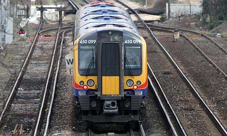

Hopefully, you realise that B2 in this map-pack doesn’t represent B2 in HL1.
I personally love the idea of a trainyard. It makes a lot of sense and would make a neat little area for us to explore.
I wrote B2 meaning the Materials Transport section of “On A Rail”.
Stacks of shipping crates and func_occluder might help reduce some of the clutter draggind down framerates. A couple of un-enterable warehouses might also help. But color me a fan of an outdoor scene- it really helps mix up the chapter in a good way.
This was already discussed a few pages ago and I’m planning on doing it, shouldn’t be difficult at all. From where B2 is situated it would be easy to see the rocket over the horizon, especially as the path you’re meant to take on B2 is directly towards the rocket - serves as a nice bit of player direction.
Speaking of which, I imagine others may be lost over the exact layout of OaR as well. That’s fine - because it’s underground it’s very hard to get an exact spatial sense of location and orientation. For my own use (allows me to line up the maps properly) and to help you guys get around it, and to show off how well the layout fits together, I compiled ALL of OaR + OaR Uncut maps into a single Hammer map. Amazingly, it all fits within Hammer’s 32,000 X 32,000 unit grid, which did surprise me. The total dimensions of the entirety of On a Rail (with Uncut) is 16384 units X 29184 units.
EDIT: Using straight lines to map out Gordon’s path, I estimated how far Gordon now has to travel to reach the rocket - this is a VERY rough guess but I was actually being very conservative so I’d imagine the actual path was much longer - with OaR Uncut full Gordon has to travel 55248 units to reach the rocket. 1 unit = 1 inch (roughly) so his path is about 1.4KM with OaR Uncut. Using a similar measure for working out distance on OaR WITHOUT Uncut, I got the rough estimate that in BM Default, Gordon travels around 13824 units, which is roughly 350m (this is actually consistent with some estimates near the start of the thread which were around 300m). So to conclude - it adds nearly a KM to the Gordon’s OaR journey!
It looks like a pretty epic journey when laid out and combined into one map. I annotated it to make understanding it as easy as possible, but because the layout gets so complicated around the rocket itself, it still isn’t the easiest task in the world:

The red line with arrows represents the player’s path to the rocket. As you can see the A maps feature very linear, straight line travel towards the rocket, while the B maps involve you trying to find a way around the HECU blocking you from the primary rocket access. You can see the B maps feature a lot of “hairpinning”, but sadly, such a thing is in many ways unavoidable. Because B and C are so carefully overlapping there’s really not much I can do - the current layout is basically the best I can manage within the existing constraints. I still really like it. OaR is now like an epic journey rather than the short walk Black Mesa’s default version was! As you can see, B2’s location allows me to develop a really large skybox to the “right”, because there’s literally nothing there. Brilliant.
The whole thing about post-launch being the only time to enjoy the outdoors is more of a Black Mesa thing than a Half-Life thing. Half-Life had that area with the Sniper beforehand where you can could wander round for a bit and enjoy the outside, prior to reaching the rocket.
I’m all for staying true to HL1 - but I’m not in favour of staying true to its weaknesses. One of it’s weaknesses is the lack of variation throughout the OaR chapter - which drew people to the false conclusion that the chapter was boring solely because it was long. I’ve attempted to alleviate this in 2 ways. Firstly - the Mat Trans segment of the chapter having a totally different look and feel. And secondly - a large segment of B2 being based outdoors. I get there’ll be people that don’t like the outdoor section because maybe it’s not claustrophobic or because it wasn’t in HL1 - if it really is a problem, maybe stick to the Lite version of Black Mesa’s default version. There seem to be plenty of people who are warm to the idea - and I am too.
Yep. I’ve taken this idea and started running with it. I still need to figure out a good place to put the crane and shipping containers, I’ll probably put them where the black space near the orange robot was.
I’m in the process of trying to figure out exactly how to lay out the trainyard and the tracks around it.
I currently have 3 tracks leading to a “loading zone,” where trams can be unloaded.
This is probably easier to explain with a picture, so here it is:

You see where the tracks come to an end? I’m torn about how to do this. I currently have 3 tracks which fit the trams used throughout OaR. There is an alternative I’m considering, figure I might as well get a second opinion.
I could also have just 2 tracks leading to the loading zone, which instead fit larger actual trains, and have more space to unload, as opposed to the small trams you see throughout OaR. This could look cool, and potentially a lot more impressive. What do you think? Personally I’m more inclined to stick with the current design.
There’s no other crane model. If you want to make an entire crane model for me, feel free to be my guest. And if you’re going to suggest making it brush based, don’t. I’m already making sweet, sweet love to the brush limit.
Security vs HECU could be pretty cool actually, but it would be tricky to get right. As you said, having surviving Security Guards simply would not work. It’s not easy to script it so that a side ALWAYS loses either, without simply throwing massive numbers of HECU at them - and then the player’s left fighting massive numbers of HECU.
I’m already doing this as well. The tunnel on the loop (if you don’t switch the track like you’re meant to), is a cave-tunnel. I do need to find some kind of explanation as to WHY there’s a cave-tunnel, but that should be doable.
You mean something like this, but for freight?
Not a bad idea, it could be cool, although I’m not sure what models you’ll use for trains, all HL2 has is the Eastern European trains. I guess you could brush trains, or even just flatbeds with containers on them, though. I’m liking the idea, shame we can’t just have 'em both! 
What about brushing one up and hitting it with the propper?
Maybe you could set the guards on lower health? In my experience, as long as you don’t give 'em revolvers, they shouldn’t put too much hurt on the soldiers.
You could also set up an npc_maker just out of sight to infinitely replenish dead soldiers (if one dies, another will spawn and come in the door), and have it deactivate when all the guards are dead. (this would basically be a fail-safe, the guards should lose anyway, but this insures that they do)
Oh, neat! Now I can’t wait to see that.
I agree that this has the potential to look really cool, though I’m not sure how far you can take this without any railroad specific models. Are there any from HL2 in the SDK?
If you can get train cars, then you can even use them for level borders since I recall you saying you’re not too fond of the cliff sides.
I guess it all depends on how you feel about this, because if you go trains then you can add tons and tons of scale without running out of ideas. But as I said, I don’t think there’s much you can do without the assets, so it might not be worth it.
{kind=link}
tl;dr: go trains only if you actually have the means to make it considerably more impressive than using trams.
Good idea to get normal trains aswell…
In the beginning of HL2 u see such train pass, just after the point where u got ur crowbar… (Freighter)
Maybe not exactly the same, but u have an idea where to look
Well, you can check all of the train models for Half-Life 2 and its episodes at the end of this page, but then there is a problem. First, the only non-Russian locomotive model is the EMD GP60, and since it’s labeled as unused I’m not sure it can be found in the game’s files. Then, and more importantly, there is no freight car model for containers. The only solution left is to look into other source games for such type of train, maybe Left 4 Dead, but I’m not sure if modders have the right to cross models from different source games.
For the rail tracks I would suggest something more like longer straight lines, but I fear that would double the length of this open area. Still, I like what you started here, especially it it’s only for Back Mesa’s material transport trains. However, I would suggest that those 3 dead ends in the middle of the area be covered by some sort of structure, a warehouse for example, or something simpler like that.
{kind=link}
The problem with those is those are late century Eastern European designs, they don’t fit well with Black Mesa being in the modern (200x) United States. The GP60 and other boxcars were reused from CSS (de_train), and I’m not 100% sure we’re able to use EP2 models anyway. I know for a fact though that L4D models are off-limits, those are from a different game and they might not even be comparable with whatever source build Black Mesa is on (L4D models get weird chrome reflections in other games).
Rails shouldn’t be a problem. There’s a duel rail model in HL2 that runs in a straight line and isn’t that long. Failing that, there’s several ground textures for rails, so it’s real easy to brush up a train track where you need one. There’s also the tram rails, they don’t line up with the train wheels perfectly (slightly thinner) but who cares that much 
There are, but not the right kind. It’s real easy to improvise though. I have very little skill with Hammer, but I managed to make up an example using brushes and textures.
The textures I chose were the obvious 2 (the 2 HL2 crate textures, were also used for boxcars during the trainyard flight and route canal) and the third was just mixing it up a bit with other metal textures I found (turned out to be the best one imo).
The structure itself is simple, 2 train005’s joined together on end, the extra set of wheels is hidden by the metal skirt in the middle, and then the top brushes. Just repeat that, switch up the textures, and you got a boxcar train. It took me 5 brushes per car, but a good hammer user could probably get it down to 2 (I assume every texture doesn’t need to be a new brush?). And if not, there’s still propper to pick up the slack as well.
As for the engine, no need, we can just assume there isn’t one in the yard. We could also take the Blue Shift route and have some of those utility trams near the boxcars and assume they use those to move them around the yards.
yes
random ideas.
- sense you can’t put in the heavy turrets from the original put in a APC that has been placed on a tram car an secured to it (or at least made to look like its secured)(should be easy just need a orange rope texture or something). do to its immobile state, the player can either, blast it with some smg grenades, or take some satchel charges and get behind it.
- Put a RPG grunt on the top of that crane, its a high point and by this point the hecu are bringing everything short of tanks to kill freeman and the aliens, so it would make sense (also seeing as you get one shot at you later). do to the location the player would not be able to get the RPG with out cheating so it would make sense. and even if the player did get it some how they would only have one shot.
- would suggest replacing the cargo container the crane is holding with a tank or something (remove magnet add ropes and a platform.) but I don’t know if it would look good or not.
APCs were first introduced in ST, and I think that introducing it earlier gives it less of an impact later on. As for the RPG… I would say maybe. It’s a risky idea. I mean, a really dedicated player could set grenades blow up near the rpg, thus making it possible to move the rpg. The last one seems fairly cool, but I am not sure whether it’s doable from a technical standpoint.
I suggested this one before, I’d still like to see it, but I don’t know if there’s room anymore.
It’s possible to make them not drop the RPG. That’s what the grunt in c2a2c does after he fries your tram.
Don’t think introducing the APC this early will lessen its impact in ST, if done right. having only its turret operational plus the fact that it will be in a dark area makes it less likely for the palyer to pay much attention to it other then blowing it up. the best way to go would be to put it on a tram with “walls” blocking the view of most of it.
On the RPG drop. pretty sure a player would need to be hell lot of dedicated to get the RPG early if so let them have it as they would only have one shot till the point they would need it. that being said, invisible walls do wonders.
@Mr. Someguy
I suppose tug trams in the yard are the best choice possible, since larger engines wouldn’t be easy to move around into restraint ares like this. Btw nice flatcars you made there, though it would be better if we can find an actual model or create one.
And I told myself I would keep myself away from media so that I wouldn’t ruin the blind run. …Well, as long as I don’t know how the level plays/is laid out I’ll still be able to do that.
From the picture, I have just one thing. In a couple spots I can see a couple switchovers between parallel tracks (middle left and lower right). I think it would be a good idea, design-wise, to have another such crossover for a mirror. Should look something like this: 
It’s true that models are usually better, but we don’t have models that would fit Black Mesa’s atmosphere, which is why I suggested (and demonstrated, easier to explain that way) brush trains.

U can also use rails like this, double train rails…
So u can use big trains and trams on the same line!
I like the idea of having the larger actual train tracks leading outside the area. It makes sense that the trains would bring in the cargo to the facility which would then be unloaded and put onto Black Mesa’s tram system for distribution within the base.
It would be nice to be able to see what exactly was being brought in to Black Mesa and I think we should take some time to consider that firstly. What could and would be made inside the base and what would they actually need to be transported in from elsewhere that couldn’t be brought in by other means? You can then use that to tell a visual story not only of the material transport system itself, but also by showing the not so ordinary nature of the things Black Mesa needs to operate.
Also keep in mind that whatever is on these trains is what was arriving that morning or before prior to the resonance cascade.